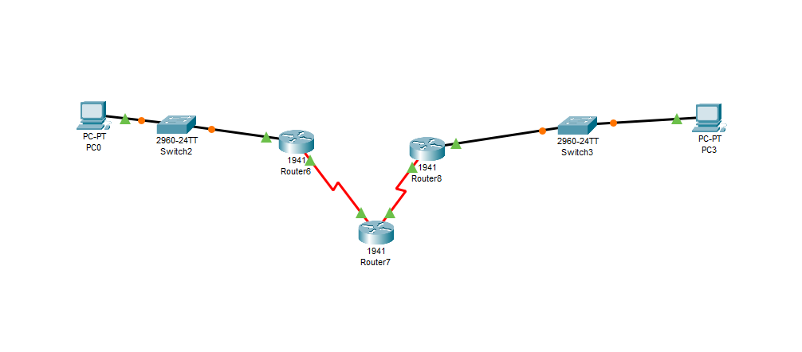
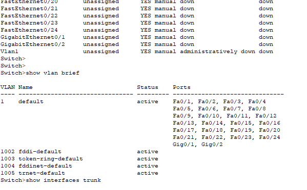
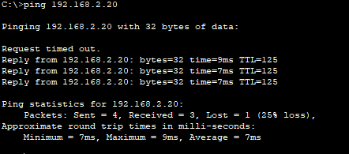
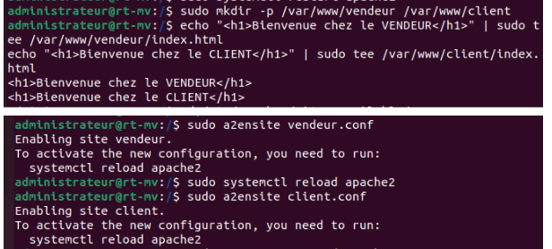
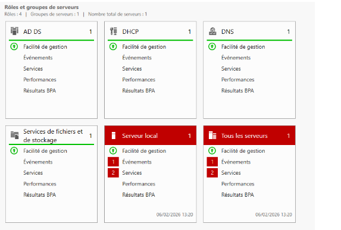
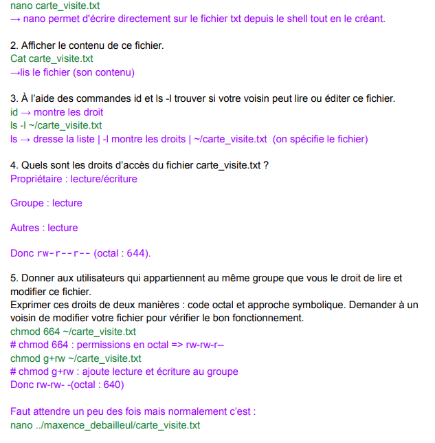

Étude des courants et tensions pour les équipements RT.
Mesures physiques et calculs théoriques en laboratoire.
Intervenir en sécurité sur le matériel et diagnostiquer des pannes physiques.
Codage de l'information et principes fondamentaux de l'Internet.
Analyse des couches du modèle OSI et des mécanismes de communication.
Comprendre comment les objets électroniques communiquent entre eux.
Adressage IP, configuration de switchs et de routeurs.
Passage de la théorie à la pratique grâce aux TPs enchaînés ce semestre.
Savoir faire parler les machines entre elles de manière logique.

Topologie Packet Tracer
Configuration Switch (CLI)
Validation des pingsAdministration des systèmes (Linux/Windows) et gestion des services réseaux fournis.
Utilisation intensive de la ligne de commande pour la gestion des serveurs, des fichiers et des droits.
Devenir l'administrateur responsable d'un système et piloter des projets en autonomie.

Gestion de fichiers via CLI Linux
Configuration des services serveurs
Droits et accès des utilisateursDétection et signalement des erreurs réseau.
Apprentissage d'une logique de dépannage intelligente et patiente.
Gagner en autonomie et arrêter de simplement "bidouiller".
Préparation propre d'une machine et gestion des accès sécurisés.
Installation rigoureuse en suivant une méthodologie de travail.
Être capable de piloter des projets seul sans aide constante.
Étude de la transmission des données sur différents supports physiques.
Utilisation d'outils de mesure pour vérifier la qualité des signaux et identifier les erreurs.
Pour garantir que les objets électroniques communiquent sans perte d'information[cite: 3].
Compréhension de scripts d'automatisation et de logique algorithmique.
Développement de petits outils permettant de gérer des tâches répétitives sur un serveur.
Gagner en autonomie et être capable de piloter des projets sans aide extérieure constante[cite: 7, 22].